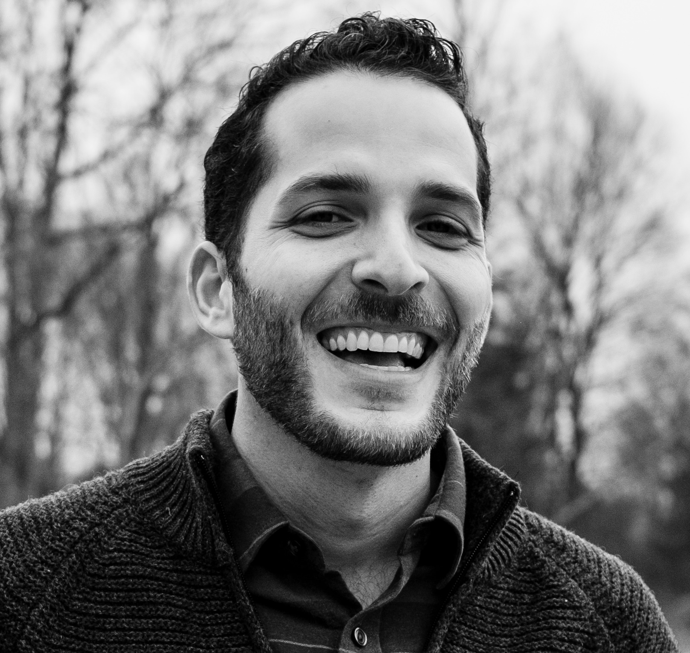

David Gofman's Resume

About Me Writing Samples Contact Me
Summary
Hi there, my name is David and this is my website that shows my proficiency in HTML. I have been a practicing mental health clinician and healthcare leader for nearly a decade, and am exploring my love of learning and curiosity by learning web development. My most recent professional experiences are below, and I will continue to build out this page as my skills grow. Thanks for checking this out!
Education
 University of Denver
University of Denver
Denver, CO
Masters of Arts, Sport & Performance Psychology - Class of 2016
 Ithaca College
Ithaca College
Ithaca, NY
Bachelors of Science, Television & Radio - Class of 2013
Work Experience
Gofman Therapy and Consulting
January 2020 - Present
Founder, Therapist, and Career Coach
- Provide Project Management, Process Improvement, and Leadership Coaching services as a consultant.
- Maintain a 25-30 hour per week caseload, offering mental health counseling and academic/career coaching services for a variety of presenting concerns.
- Practice specialties include anxiety, OCD, chronic pain, stress, perfectionism, relationship issues, addiction
New Horizons Healthcare
September 2021 - June 2023
Director of Behavioral Health
- Responsible for managing networked project teams and building a culture of effective project management through education and training of key leaders and staff.
- Led preparations for the clinic’s Operational Site Visit (OSV) for 2023, a complex compliance requirement covering 93 distinct elements across 19 project areas.
- Managed a department of 15 Behavioral Health employees, ranging from Clinicians to Case Managers, and Peer Recovery Specialists.
- Increased the enrollment of the Office-Based Addiction Treatment (OBAT) program, a state-directed Medication Assisted Treatment (MAT) program, by over 600% in first 12 months.
- Oversaw clinic transformation to the Primary Care Behavioral Health (PCBH) model of Integrated Care.
- Increased total Behavioral Health visits by 18% year-over-year in first year through proactive strategic initiatives.
- Secured $40,000 Mental Health and Substance Use ARPA grant from the City of Roanoke to expand the scope of the opioid treatment program to include treatment for all substance use disorders.
- Spearheaded development, implementation, and training on a new Behavioral Health Module within the EMR.
Causeway Collaborative
June 2016 - September 2021
Director of Operations
- Led the organizational transition to fully remote and telehealth services during the COVID-19 pandemic.
- Redesigned hiring process resulting in improved organizational ability to source and hire the right candidates for open positions.
- Developed and implemented formalized training protocols for all new employees, including compiling essential reading materials, informational videos, and shadowing and supervision schedule.
- Created and implemented a yearlong calendar of bi-weekly trainings for all staff covering common presenting concerns for clients during that time of the year.
- Provided regular supervision for entry-level employees in their administration of career coaching and mentorship service delivery. Focus areas include case conceptualization, intervention selection, and transference.
- Maintained an active caseload of 15-20 hours of direct service per week.
Skills
Relevant Skills
Process Improvement, Project Management, Training and Development, Leadership, Practice Transformation, Quality, FQHC Compliance, Strategic Planning, Operations, Grant Reporting, Strategic Growth, Communication
Technical Expertise
Asana, eClinical Works, Slack, Microsoft Teams, Microsoft Office Suite, G Suite, OneDrive, Zapier, Mailchimp, Podio, Globiflow, Notion
Awards, Certifications, and other achievements
- Licensed Professional Counselor (LPC) in Connecticut and Virginia